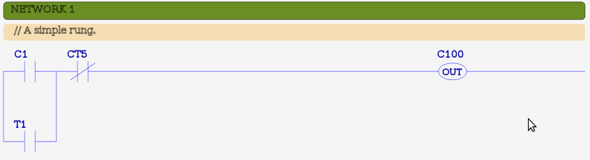

MBLogic
for an open world in automation
MBLogic
for an open world in automation
Program Formatting Instructions
Program formatting instructions do not directly affect the program flow or results, but they do act to help document and organise a program.
| Instruction | Description | # Params | Parameters |
|---|---|---|---|
| // | Comment line | Undefined | Arbitrary text |
| NETWORK | Network | 1 | Integer |
Anything following a comment token ("//") is considered to be a comment and is ignored. The comment token must be separated from the following comment text by one or more spaces.
When displayed in ladder format, all comments in a rung are gathered together into a single block and displayed just below the "NETWORK" instruction. This affects the display of comments only, and does not affect the original program file.
Example:
// This is a comment.
A network is also often known as a "rung". The "NETWORK" token is an instruction that resets the logic stack and begins a new block of code. The NETWORK instruction takes an one integer as a parameter. Network (rung) numbers do not have to be unique or consecutive.
Network numbers are used to report syntax errors when the program is compiled, and are also used to report run time errors.
Example:
NETWORK 1
Example in ladder format:
